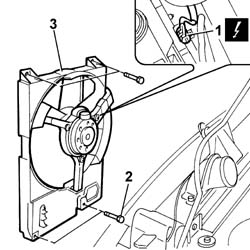

1088E16 LEFT ENGINE COOLING FAN OR FANS - R.R. FOR VERSIONS WITH AIR CONDITIONING
- Path
- Procedures > 10 ENGINE UNIT > 1088 ENGINE COOLING > 1088E COOLANT TEMPERATURE CONTROL DEVICES > 1088E16 LEFT ENGINE COOLING FAN OR FANS - R.R. FOR VERSIONS WITH AIR CONDITIONING
- Kind
- repair procedure (removal / refitting; the operation number is the code)
- Applies to
- engines: 2.0 16V; all production periods
- Interactive page
- https://sloeber94.github.io/elrnDB-fDct/en/#/244000977
Applies to: engines: 2.0 16V; all production periods
 Removing
Removing
 Refitting
Refitting- Disconnect the negative battery terminal.
Op. 1048A21 FILTER INPUT SLEEVE - R R
Op. 7055B54 UNDER-ENGINE GUARD - R R
1. Disconnect the electrical connection for the left fan.
2. Undo the retaining bolts.
3. Remove the left fan from the housing on the engine radiator.

Applies to: engines: 2.0 16V; all production periods
Refitting
Removing- Fit the left fan in its seat on the engine radiator and tighten the retaining bolts.
- Connect the electrical connection for the left fan.
Op. 7055B54 UNDER-ENGINE GUARD - R R
Op. 1048A21 FILTER INPUT SLEEVE - R R
- Connect the negative battery terminal.